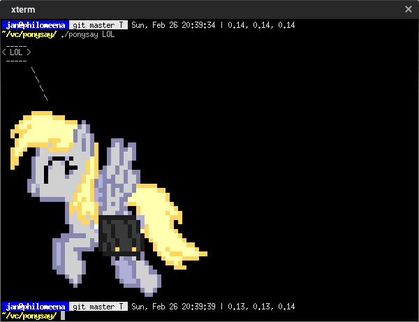

ponysay — a cowsay reimplemention for ponies
ponysay as an awesome terminal application to display ponies speaking messages in your terminal.
It has many features; you can use its info manual to explore them, the manual is
available here and here as PDF. On the left you can find a few recommended
sections of the manual to read, if you are not up for reading the entire manual.
If you cannot find a package for ponysay in your operating system's repositories, take a look here or build it yourself.
On most systems with the base and base-devel packages with Python 3 installed,
downloading the software and running sudo ./setup.py --everything install
should suffice to install ponysay, complete with everything it has to offer. If you are not privileged to run as
superuser you can install it only for your user by omitting sudo and appending
--private.
If you are missing your favourite pony, ask and we shall add it (as soon as possible).

Today your terminal, tomorrow the world!